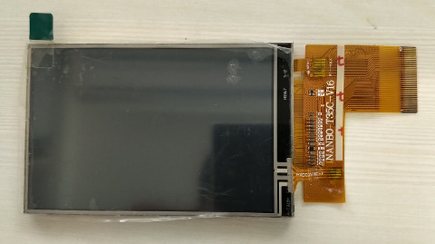
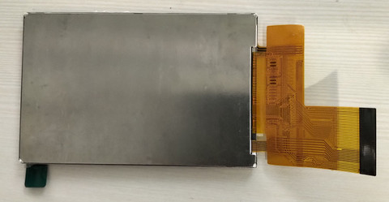
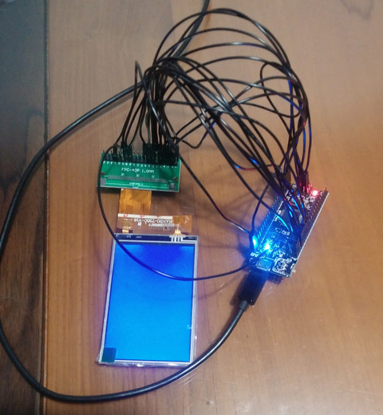

屏


#include "stc15w4k56s4.h"
#define CS P54
#define RS P43
#define WR P42
#define RD P41
#define RST P40
void delayms(unsigned int ms)
{
unsigned int cnt = 0;
while (ms--) {
for (cnt = 0; cnt < 1000; cnt++) {
}
}
}
void cmd(unsigned char cmd)
{
CS = 0;
RS = 0;
WR = 0;
P0 = cmd;
WR = 1;
}
void data(unsigned char dat)
{
CS = 0;
RS = 1;
WR = 0;
P0 = dat;
WR = 1;
}
void reset(void)
{
RST = 0;
delayms(100);
RST = 1;
delayms(100);
}
void init(void)
{
cmd(0xe0);
data(0x00);
data(0x0e);
data(0x15);
data(0x06);
data(0x13);
data(0x09);
data(0x3a);
data(0xac);
data(0x4f);
data(0x05);
data(0x0d);
data(0x0b);
data(0x33);
data(0x3b);
data(0x0f);
cmd(0xe1);
data(0x00);
data(0x0e);
data(0x16);
data(0x05);
data(0x13);
data(0x08);
data(0x3b);
data(0x9a);
data(0x50);
data(0x0a);
data(0x13);
data(0x0f);
data(0x31);
data(0x36);
data(0x0f);
cmd(0xc0);
data(0x10);
data(0x10);
cmd(0xc1);
data(0x44);
cmd(0xc5);
data(0x00);
data(0x10);
data(0x80);
cmd(0x36);
data(0x68);
cmd(0x3a);
data(0x55);
cmd(0x21);
cmd(0xb0);
data(0x00);
cmd(0xb1);
data(0xb0);
cmd(0xb4);
data(0x02);
cmd(0xb6);
data(0x02);
data(0x22);
cmd(0xb7);
data(0xc6);
cmd(0xbe);
data(0x00);
data(0x04);
cmd(0xe9);
data(0x00);
cmd(0xf7);
data(0xa9);
data(0x51);
data(0x2c);
data(0x82);
cmd(0x11);
delayms(120);
cmd(0x21);
cmd(0x29);
cmd(0x03);
data(0x00);
cmd(0x2a);
data(0x00);
data(0x00);
data(479 >> 8);
data(479 & 0xff);
cmd(0x2b);
data(0x00);
data(0x00);
data(319 >> 8);
data(319 & 0xff);
}
void color(void)
{
int x = 0;
int y = 0;
cmd(0x2c);
for (y = 0; y < 320; y++) {
for (x = 0; x < 480; x++) {
data(0x00);
data(0x1f);
}
}
}
void gpio_init(void)
{
P0M0 = 0x00;
P0M1 = 0x00;
P1M0 = 0x00;
P1M1 = 0x00;
P2M0 = 0x00;
P2M1 = 0x00;
P3M0 = 0x00;
P3M1 = 0x00;
P4M0 = 0x00;
P4M1 = 0x00;
P5M0 = 0x00;
P5M1 = 0x00;
}
void main(void)
{
gpio_init();
AUXR |= 0x80;
reset();
init();
color();
while (1) {
P55 = 0;
delayms(1000);
P55 = 1;
delayms(1000);
}
}
Makefile
all: sdcc main.c packihx main.ihx > main.hex flash: sudo stcgal -p /dev/ttyO2 -P stc15 -o clock_source=external main.hex clean: rm -rf main.ihx main.lst main.mem main.rst main.lk main.map main.rel main.sym main.hex
完成
